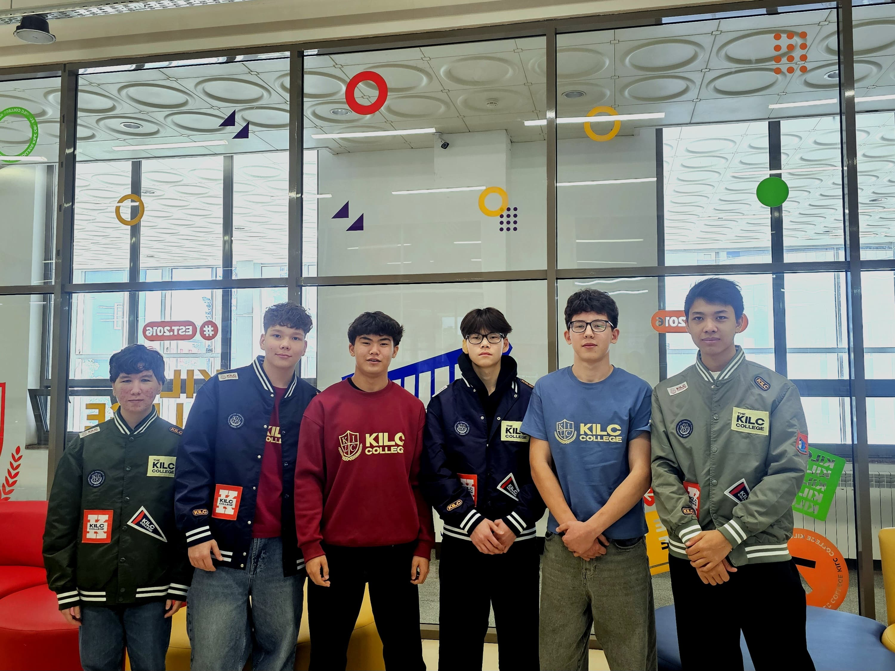
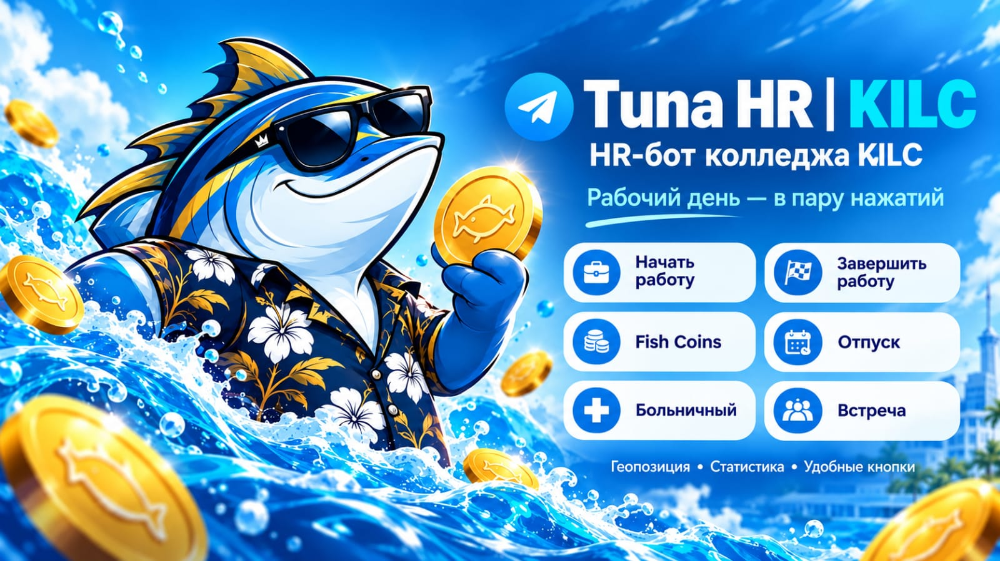

KILC Team Alen · Posttech Hackathon 2026
Tuna HR — Цифровой HR нового поколения
Больше не нужно разбираться в командах для ботов или быть экспертом в управлении командой — Tuna HR поможет вам с поддержанием коммандного духа и мотивации у сотрудников.
Наш бэкграунд
История команды

Команда KILC Team Alen была сформирована внутри колледжа KILC в сентябре 2026 года. Нас, как команду, объединил интерес к инновациям, ИИ и программированию. Вместе мы решили сделать что-то необычное и полезное.
- 1 cентября 2026 Участники будущей команды начинают обучение в колледже, разделяя общий интерес к ИИ и инновациям.
- 15 сентября 2026 Формирование команды и принятие участия в хакатоне Posttech
- 16 октября 2026 Начало хакатона Posttech.
- 18 октября 2026 Хакатон будет окончен, станет известен его результат.
Разрабатываемый нами проект
TUNA HR

Tuna HR объединяет контроль рабочего времени, геолокацию, мотивацию и заботу о сотрудниках в одном удобном боте. Главным преимуществом нашего бота является виртуальная валюта Fish Coins, ведь геймификация — подтверждённый временем способ увеличить мотивацию. А HR-функции становятся проще за счёт интегрирования ИИ, а также замены устаревших электронных писем на современный мессенджер Telegram.
Попробовать Подробнее- Проблема: Коммуникация через десятки не связанных с собой разных приложений нередко путают и выматывают.
- Наш подход: Единая платформа, интуитивный интерфейс и взаимодействие делают коммуникацию внутри организации в разы проще.
- Стадия разработки: Рабочий прототип выполнен полностью.
Контактные данные